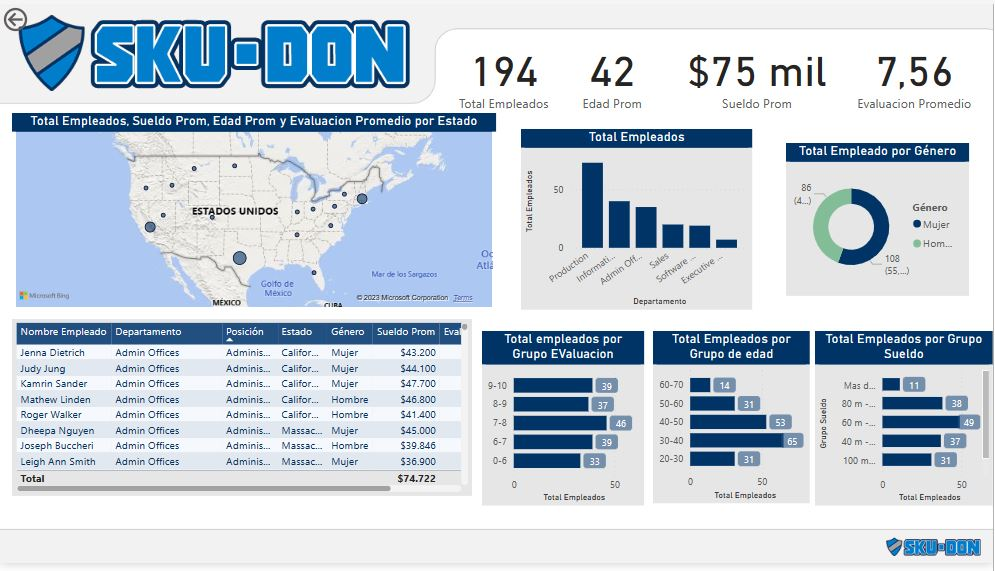
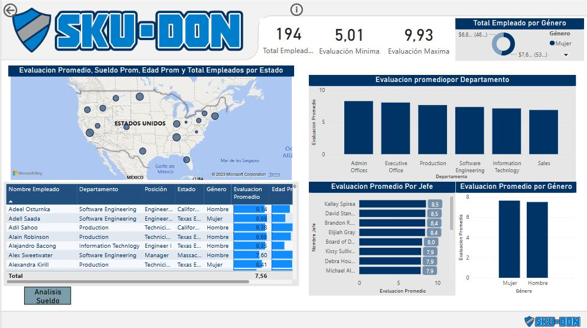
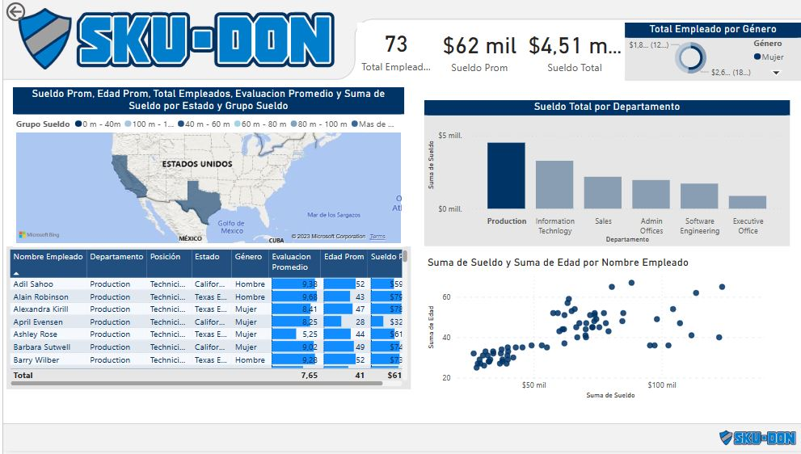

Contacto
Puedes contactarme a través de los siguientes medios:
- Email: stibenrapalog@gmail.com
- Teléfono: +504-89091504


En este proyecto, se realizaron evaluaciones para analizar el desempeño de los colaboradores de la compañía Sku-Don en diferentes aspectos. Se evaluó el desempeño promedio por departamento, permitiéndonos conocer el rendimiento de cada área específica. Además, se calculó el promedio de desempeño por género, brindándonos información sobre las diferencias en el rendimiento entre hombres y mujeres. Asimismo, se evaluó el desempeño promedio de los colaboradores en relación con sus respectivos jefes, lo que nos permitió analizar la influencia de la supervisión directa en el rendimiento de los empleados. Estos análisis nos proporcionaron una visión detallada del desempeño de los colaboradores en Sku-Don, destacando las áreas de mejora y fortaleza en términos de evaluaciones de desempeño.
Power Bi
Total de colaboradores por Ubicacion,departamento,genero, sueldo y edad
Evaluación promedio de desempeño por departamento, por genero y evaluacion promedio por jefe
Análisis de sueldo por departamento, y comparacion entre sueldo y edad
Puedes contactarme a través de los siguientes medios: